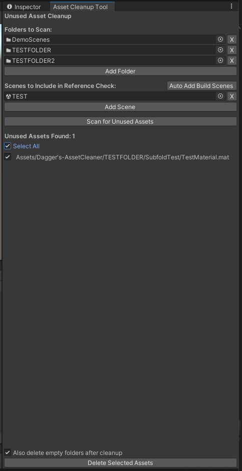

Overview
This Unity editor extension detects and removes unused assets from projects safely and efficiently. Designed for developers managing large or long-term projects, it prevents content bloat, optimizes repositories, and accelerates workflows by eliminating unused models, textures, scripts, and more — all without ever touching runtime behaviour or the build pipeline.
Key features
- Manual scene-based scanning — analyze only developer-selected scenes.
- Recursive folder omission system for protecting sensitive assets.
- Comprehensive unused-asset detection using Unity's dependency system.
- Safe, controlled bulk-deletion workflow with clear confirmations.
- Optional per-asset review with ping-to-Project for validation.
- Immediate asset database refresh after deletions.
- Intuitive, responsive editor window with organized asset reporting.
Who it's for
- Developers working in large or asset-heavy Unity projects.
- Teams using version control who want cleaner repositories.
- Indie developers optimizing project size and build cleanliness.
- Asset Store publishers preparing professional packages.
- QA teams maintaining build hygiene across multiple projects.
Why it stands out
- Manual scene selection for precision control.
- Recursive omit-folder protection — often missing in competing tools.
- Minimal, production-focused UI for safe operation.
- Self-protects against accidental deletion of its own scripts.
- No impact on runtime behaviour or the build pipeline.
In the editor

Clean up your project
Trusted by 1.7k+ developers on the Unity Asset Store.